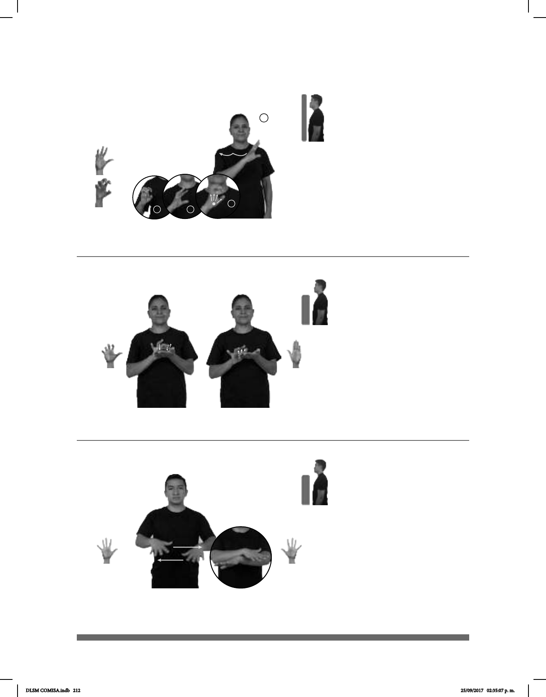

212
2
3
4
1
Seña: SM
Seña que pasa de 5.2
a 5.9
Palma oblicua hacia la
izquierda y hacia afuera.
Del hombro izquierdo al
hombro derecho.
El brazo sigue una
trayectoria ondulada mientras los dedos
se retraen repetidamente.
sust. m. Animal de diez
brazos que vive en el mar, suelta un
líquido negro cuando lo atacan y es
comestible.
(5-G 58)
AHORA MAR HABER POCO CALAMAR
Ahora hay pocos calamares en el mar.
Seña: SB
MD 5.13, MB B-P.2
MD palma hacia abajo,
MB palma hacia arriba.
A la altura del pecho. MD
sobre MB.
Los dedos índice, medio
y anular de MD se mueven
alternadamente.
sust. f. Máquina
eléctrica, electrónica o mecánica que
hace cálculos aritméticos o
matemáticos.
(5-G 59)
MATEMÁTICAS CLASE CALCULADORA pro-YO USAR
Uso la calculadora en la clase de matemáticas.
Seña: SS
5.1
Palmas hacia abajo.
A la altura del abdo-
men, de los lados al centro.
Las manos cruzan
hacia el centro y llegan a un punto
cercano.
1. v. tr. Dar, tomar,
poner o dejar una cosa por otra. 2.
sust. m. Refrescar o suistituir una
cosa por otra.
(5-G 60)
1
2
AYER pro-ÉL 20 MIL PESOS CAMBIAR DÓLARES
Ayer él cambió 20 mil pesos a dólares.
DLSM COMISA.indb 212 25/09/2017 02:35:07 p. m.